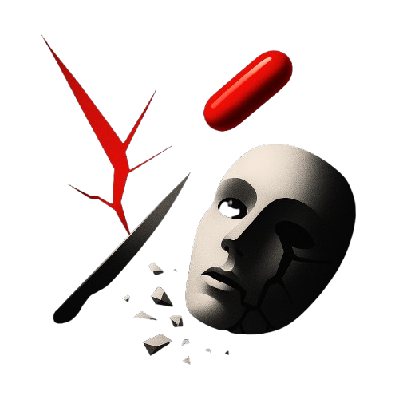

LEKCE DRUHÁPravda bolí, ale lež zabíjí
Jednou se probudíš. A začneš tušit, že svět kolem tebe není takový, jak ti říkali. Že ten obraz "jak to má být" je jen kulisa. A že všechno to pohodlí, které sis budoval – školu, práci, vztahy, chování podle pravidel – je možná past. Ne proto, že jsi blbý. Ale proto, že jsi věřil.
První lekce tě donutila otevřít oči.
Tohle je ta chvíle, kdy se podíváš do zrcadla a řekneš si:
„Ty vole, co všechno jsem si nechal nakukat?“
Pravda bolí. Ale když ji odmítneš, celý tvůj život se stane lží. A ta tě sežere zevnitř.
Program, který ti nainstalovali
Od mala tě učili být hodný kluk. Dělej, co se po tobě chce. Buď milý. Dbej na ostatní. Naslouchej. Neodporuj. Hlavně nebuď "toxický". Buď hodný kluk – a svět se o tebe postará. Holky tě budou chtít. Šéf tě povýší. Společnost tě odmění.
Realita? Serou na tebe. Ženské nechtějí hodného kluka. Šéf tě klidně vyhodí, když se přestaneš hodit. A společnost si tě přebalí, využije a zahodí.
Ten program tě naučil věřit, že poslušnost je ctnost. Ale poslušnost je slabost, pokud ji nedoprovází hranice a síla.
Reality slap
Bolí to, když si uvědomíš, že všechno, co jsi dělal "správně", vlastně nefunguje. Že jsi makal, snažil se, dával... a nedostal zpátky nic. A přesto to není chyba ostatních. Je to tvoje zodpovědnost. Protože jsi žil podle pravidel, který ti nesloužily.
Tahle lekce tě má nakopnout.
Má tě zvednout z kolen a říct ti:
„Kámo, buď k sobě konečně upřímnej.“
Chceš život podle pravdy? Tak si připrav hroší kůži. Pravda není mazlivá. Ale je čistá. Je tvrdá. A je tvoje. Není pro každého, ale kdo ji unese, ten už nikdy nebude manipulovatelná hračka systému.
Kde konkrétně tě lež zabíjí?
- Vztahy – věříš, že když budeš „dost dobrý“, ženská tě nikdy neopustí. A pak tě stejně vymění.
- Práce – makáš navíc, nikdo si nevšimne. Pak přijdou škrty a letíš první.
- Přátelství – dáváš, protože se to má. Oni berou. A ty zůstaneš sám.
- Sám k sobě – přesvědčuješ se, že „všechno je v pohodě“. Ale ty víš, že není.
Lež tě zabíjí pomalu. Ukolébává tě. Nechá tě stagnovat. Vede tě k pasivitě a vnitřní smrti.
Tak co teď?
Teď už to víš.
Víš, že pravda je těžká, ale jedině ona tě může osvobodit.
Znamená to, že se už nebudeš vymlouvat.
Že už nebudeš očekávat.
A hlavně – že už si nebudeš lhát do kapsy.
Red Pill není o nenávisti k ženám. Není to o hořkosti. Je to o převzetí plné zodpovědnosti za svůj život. A to není jednoduché. Ale je to cesta.
Bolí to.
Ale to nevadí.
Protože to konečně jsi ty.
Bez masek.
Bez sraček.
Bez iluzí.
Co si z toho odnést?
- Otevřel si oči – ale musíš se dívat dál.
- Nečekej, že ti někdo zachrání prdel. Nezachrání.
- Přestaň si lhát – a začni stavět na realitě.
- Přestaň dělat to, co se "má". Začni dělat to, co funguje.
- Přestaň žít jako chlapec. Začni žít jako chlap.
Tahle cesta není pro slabé. Ale pokud čteš až sem, už víš, že slabost není tvoje volba.
Pravda bolí. Ale lež tě pomalu zabíjí.
A ty už víš, co si vybereš.